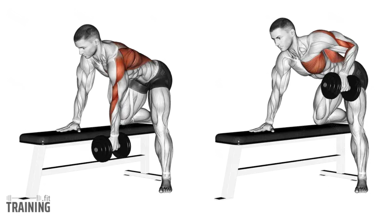

|
Pull-Up |
Latissimus Dorsi, Biceps Brachii |
Eller omuz genişliğinden biraz daha geniş bir pozisyonda barı tutarak, vücudunuzu çeneniz bara yaklaşana kadar yukarı çekin ve kontrollü bir şekilde geri indirin. |
Vücudu düz bir çizgide tutun, sallanmayı önleyin ve hareket sırasında omuz eklemlerine aşırı yük bindirmeyin. |
|
Band Reverse Fly |
Rhomboid, Posterior Deltoid |
Egzersiz bandını omuz hizasında sabitleyin, her iki elinizle tutun ve kollarınızı yana doğru açarak gerin, ardından kontrollü bir şekilde başlangıç pozisyonuna dönün. |
Sırtınızı dik tutun, hareketi kontrollü yaparak omuz eklemlerine aşırı yüklenmekten kaçının. |
 |
Lat Pulldown |
Latissimus Dorsi, Biceps Brachii |
Makinedeki barı geniş tutuşla kavrayın, sırtınızı dik tutarak barı göğsünüzün üstüne doğru çekin, ardından kontrollü bir şekilde geri bırakın. |
Sırtınızı düz tutarak öne eğilmekten kaçının ve barı çekerken dirseklerinizi vücudunuza yakın tutun. |
 |
Barbell Row |
Latissimus Dorsi, Trapez ve Rhomboid |
Ayaklarınızı omuz genişliğinde açın, barı yere paralel olarak tutup hafifçe öne eğilin. Barı karın hizasına doğru çekin ve kontrollü bir şekilde geri indirin |
Sırtınızı düz tutun, belinizi çökertmekten kaçının ve hareket sırasında ağırlığı kontrollü bir şekilde yönetin. |
|
Cable Row |
Latissimus Dorsi, Trapez ve Rhomboid |
Oturarak cable row makinesinde, tutacağı kavrayın ve gövdenizi dik tutarak kollarınızı çekip tutacağı gövdenize doğru yaklaştırın. Kontrollü bir şekilde başlangıç pozisyonuna dönün. |
Sırtınızı dik tutun, omuzlarınızı yukarı kaldırmaktan kaçının ve hareketi kontrollü bir tempoda yapın. |
 |
Deadlift |
Erector Spinae, Gluteus Maximus, Hamstrings |
Ayaklarınızı omuz genişliğinde açın, barı kavrayarak sırtınızı düz tutun ve kalçanızı yukarı kaldırarak ağırlığı yerden kaldırın. Ardından kontrollü bir şekilde ağırlığı yere indirin. |
Sırtınızı düz tutarak kamburlaşmaktan kaçının, ağırlığı bacak ve kalça gücüyle kaldırın, belinizi zorlamayın. |
|  |
Dumbbell Row |
Latissimus Dorsi, Trapez ve Rhomboid |
Bir elinizle bench'e destek alın, diğer elinizle dumbbell’ı yere paralel tutarak karın hizanıza doğru çekin ve kontrollü bir şekilde geri indirin. |
Sırtınızı düz tutun, hareket sırasında dönmekten kaçının ve ağırlığı kontrollü bir tempoda kaldırıp indirin. |
|
T-Bar Row |
Latissimus Dorsi, Trapez ve Rhomboid |
T-bar makinesine eğilerek tutacakları kavrayın, sırtınızı düz tutarak ağırlığı göğsünüze doğru çekin ve ardından kontrollü bir şekilde başlangıç pozisyonuna indirin. |
Sırtınızı düz ve güçlü bir pozisyonda tutun, omuzlarınızı yukarı kaldırmaktan kaçının ve hareketi kontrollü bir tempoda gerçekleştirin. |